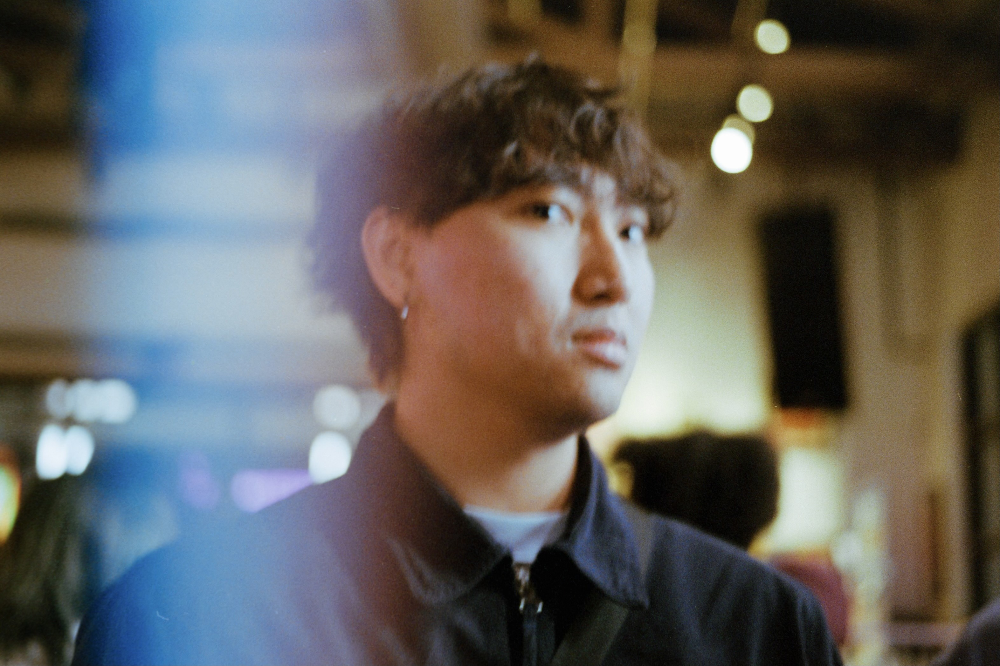

A brief intro, who am I?
I am a Computer Science student at the University of Texas at Tyler
who loves frontend development, AI/ML research, and UI/UX designing.
I specialize in crafting elevated, intuitive, and minimalistics designs
for small businesses to help them stand out in the digital landscape with
a powerful impact.
When I am not developing or coding, I enjoy reading books, learning my guitar,
taking film photography, and making memories with friends.
I am dedicated to delivering high-quality solutions and finding innovative ways to tackle challenges.
I enjoy exploring new technologies, and I'm always excited to expand my knowledge and keep up with the
latest industry trends.
Aside from my professional endeavors, I have a strong interest in technology, film, and fashion.
